Pràctica de modificar un tema a existent
Passos realitzats:
Part 1 - Modifica el tema existent
- Selecciona un tema i activa'l.
El tema que he escollit es el seguent.
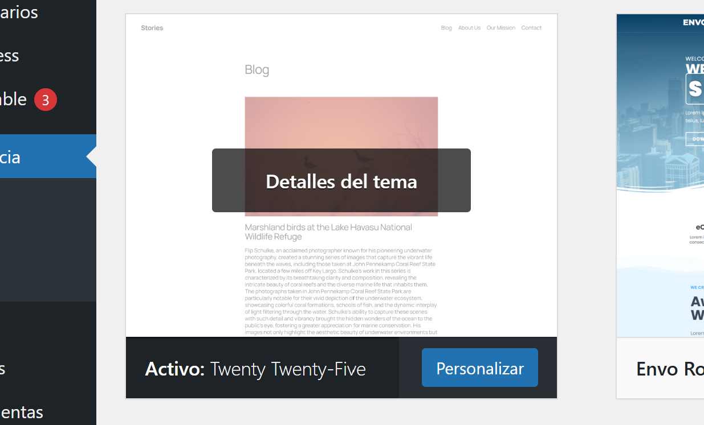
I es veu d'aquesta manera aplicat ara mateix.
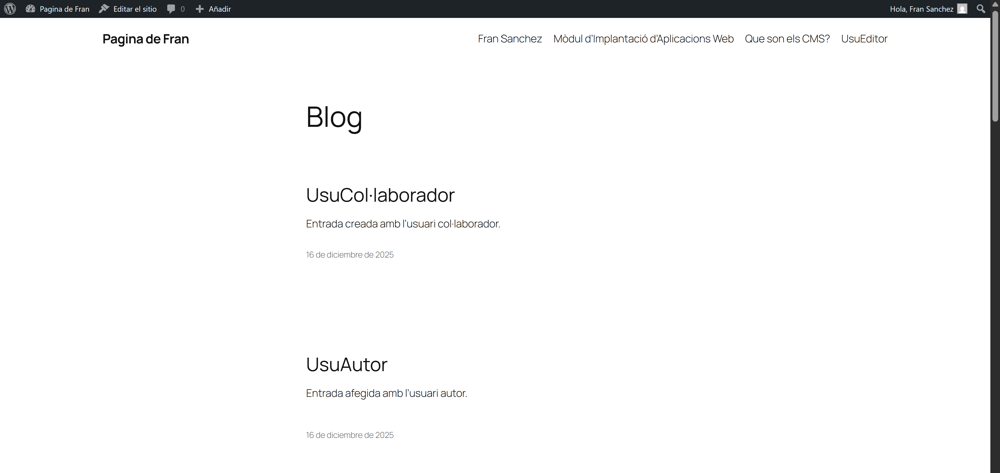
- Modificar el fitxer style.css del tema activat
Per a que canvie el lloc web, he fet estes modificacions al CSS anomenat, a Herramientas>Editor de temas.
En aquest cas he afegit una capçalera amb un text baix al fitxer header.html.
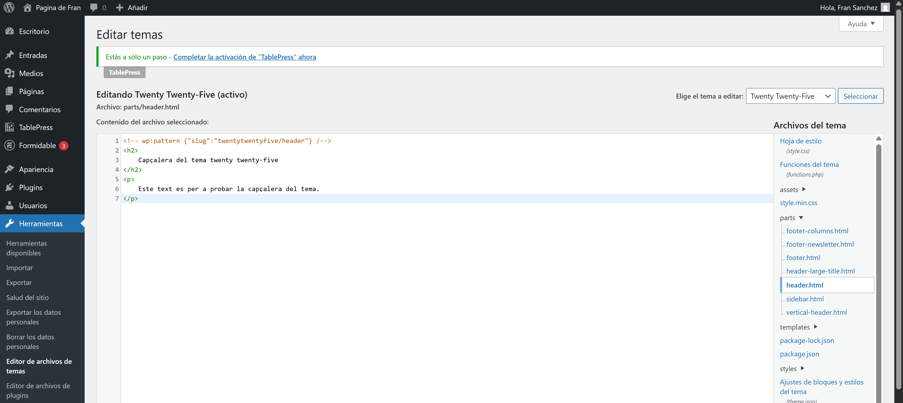
Amb aquesta capçalera, es pot veure així:
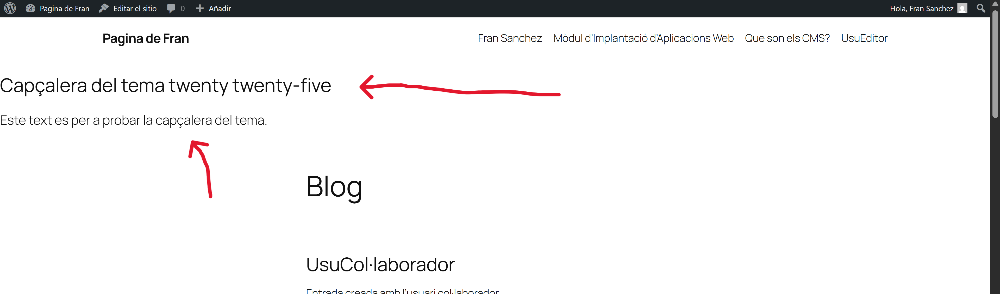
El tema per defecte, estaba agafant el fitxer d'estils style.min.css, per lo que al fitxer de functions.php he fet el seguent canvi, per tal de que agafe el fitxer style.css.
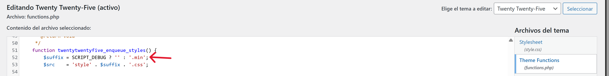
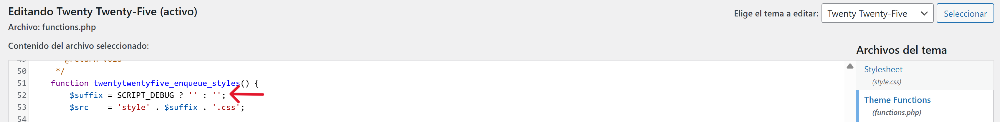
Ara, si afegim algo al fitxer style.css, com es veu a la seguent imatge, ja es veu reflexat al lloc web amb el tema aplicat.
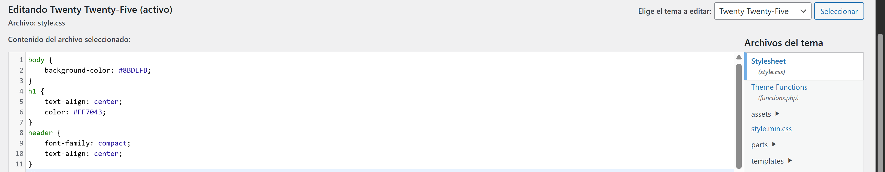
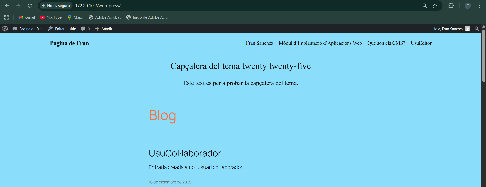
Part 2 - Personalitzar el fitxer theme.json
- Ubica i edita el fitxer json
Afegeix una nova paleta de colors personalitzada dins del bloc "settings"
El fitxer theme.json es troba dins del directori del tema sel·leccionat, a la ruta que es veu a la seguent imatge, amb els canvis que es veuen a continuació.
L'ubicació del fitxer json demanat es la seguent amb el contingut que es mostra en pantalla.
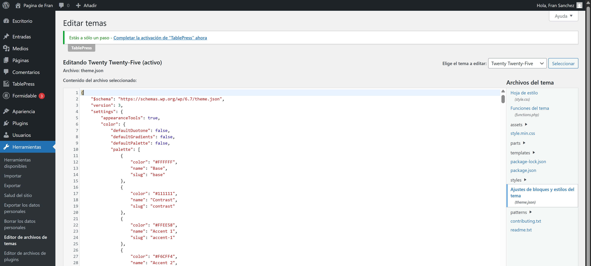
Ara mateix, les paletes de colors per defecte son les seguents al editor.
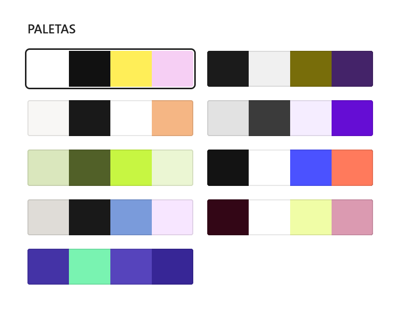
Per a afegir una nova paleta de colors, he creat un fitxer nou amb format json, junt als altres fitxers que conformen 8 de les 9 paletes de la imatge anterior, anomenat fran.json, amb el seguent contingut i permisos.
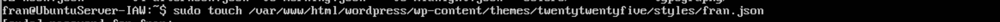
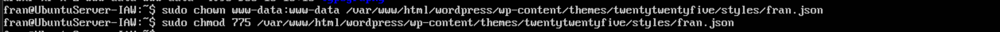
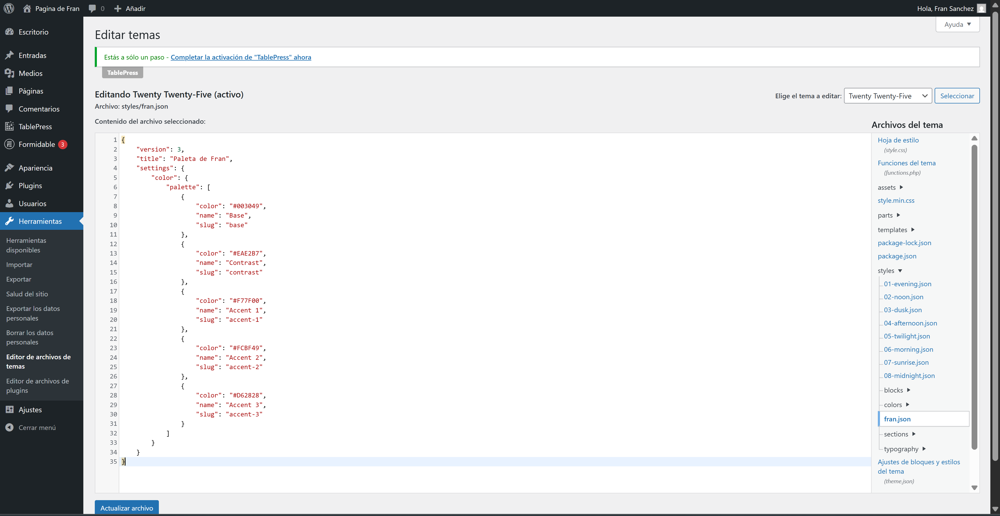
Ara mateix podem observar al Editor que apareix la nova paleta de colors, i amb eixa hi han 10:
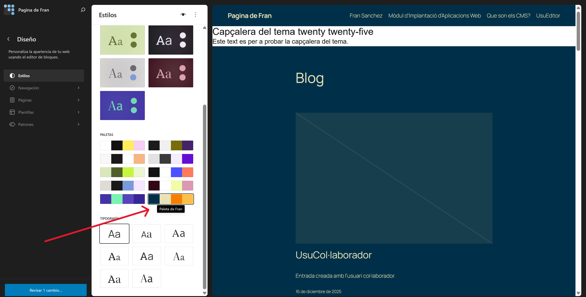
Part 3 - Crear un tema fill amb Create Block Theme
- Instal·lar i activar el plugin Create Block Theme
Ara instal·laré el plugin al apartat de plugins com es veu a l'imatge.
Ara mateix, ja es troba instal·lat i activat.
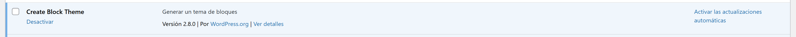
- Crear un tema fill
Per a crear ara un tema fill, del que tenim aplicat actualment, en Aparença apareix un nou apartat del plugin que acabem d'instal·lar.
Aleshores, anirem a l'opció que es troba marcada a la seguent imatge per tal de crear un tema fill.
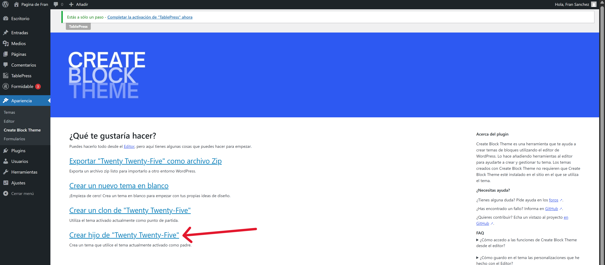
Ficarem les dades com el nom.
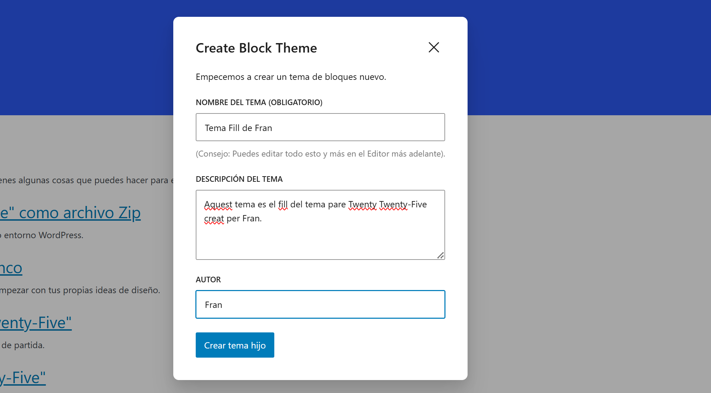
Una vegada creem el tema ens ix el seguent missatge al navegador.
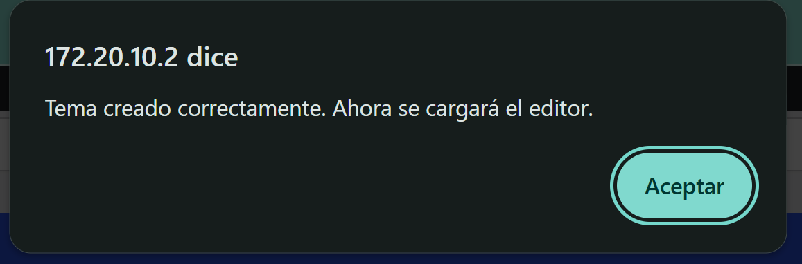
I al apartat temes veiem que ja s'ha aplicat el tema i apareix al llistat.
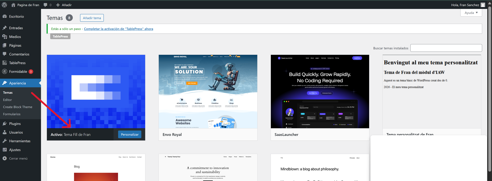
I persupost, al directori on es desen els temes, apareix el directori del tema fill.
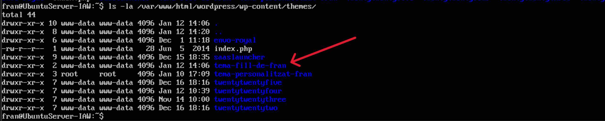